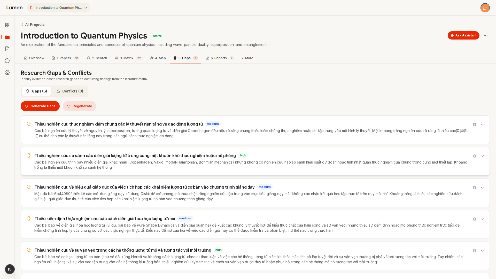
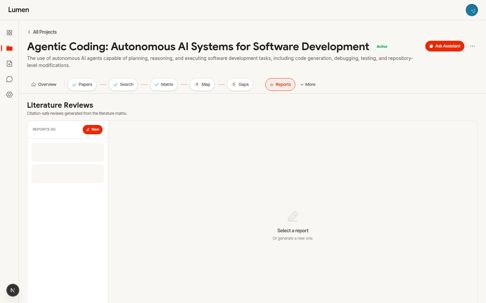

The Literature Matrix
Auto-extracted, editable, transparent.
7 fields extracted
Method • Dataset • Result • Limitation • …
Confidence-tagged
Every row shows AI certainty
Fully editable
AI gets it wrong? Click to fix in 1 second

The Lumen Chat Assistant
Drive the entire workflow through natural conversation.
Instead of clicking through 7 separate pages, command the Assistant to execute the end-to-end pipeline in one interface.
- ✓ Plan-Act Transparency: Watch the agent plan and execute live.
- ✓ Zero Data Duplication: Artifacts save directly to your workspace.
- ✓ Full Guardrails Intact: Strict validation blocks hallucinations.

Map & Gap Detection
Visualize connections. Discover what's missing.


